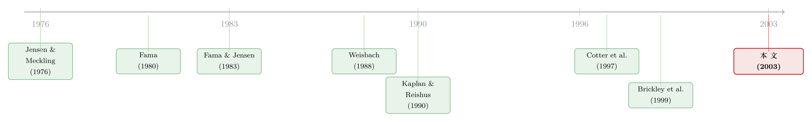

丢一个董事会席位的代价：当「看门人」自己也怕被收购
本文读的是 Harford (2003, Journal of Financial Economics)：一场收购要约对目标公司董事来说，几乎注定是一笔亏本买卖——并购完成后他们极少被留任，手里那只「难以替代」的董事席位平白蒸发，外部董事持有的那点股票远远补不回失去的薪酬流。但反过来，这份「怕丢席位」的恐惧，恰恰是逼着他们平日里认真监督管理层的隐性激励；而董事人才市场，又会对那些「拦下收购」的人秋后算账。
1 一封 30 万美元的「感谢信」
先讲一个真实的场面。1998 年美国银行（Bank of America）并入 Nationsbank，18 位因合并而出局的美国银行董事，各自收到了一张 30 万美元的支票，附带一封信，感谢他们「为建设这家伟大公司所做的贡献」。一位美国银行的高管事后解释这笔极不寻常的奖金时说得相当直白——发钱的目的之一，是「感谢这些人，毕竟，他们是投票把自己投出了一份工作」（Wall Street Journal, Feb. 10, 1999）。
「投票把自己投出了一份工作。」这句话里藏着一个让人不太舒服的事实：当一家公司被收购，替股东把关、决定要不要接受这笔买卖的那群人——董事会——同时也是这笔买卖最直接的受害者之一。我们一直默认外部董事会站在股东这边，可我们其实从没认真问过：是什么在驱动他们认真监督？而当收购真的来敲门时，这股驱动力，又会把他们推向哪一边？
Harford (2003) 这篇论文，干的就是把这件被默认、却从未被量化的事，老老实实地称了一遍重量。
2 一个被反复念叨、却没人验证的假设
公司治理这条线上，有一个近乎信仰的前提：独立董事会比内部人主导的董事会更可能为股东说话。Byrd and Hickman (1992) 在收购方一侧、Cotter et al. (1997) 在目标方一侧都发现，外部人主导的董事会在并购中能为股东争取更多价值；Brickley et al. (1994) 发现市场对毒丸（poison pill）的反应，在外部人主导的董事会那里是正的、否则是负的；Rosenstein and Wyatt (1990) 则发现，往董事会里加一位外部董事，股价反应通常为正。
这些研究都在验证「投资者期待独立董事和股东站在一起」。可问题是——凭什么？ 外部董事的合同激励，主要就是一笔年度现金聘金（cash retainer），一旦公司被成功收购，这笔钱就断了。除非董事本人恰好是大股东（blockholder），否则他们手里的持股通常少得可怜，期权更是稀罕物。
这里有组数字值得记住。按 Conference Board 的调查，在本文样本期里，1987 年只有 4% 的公司用股票（部分或全部）支付董事报酬、只有 9% 提供期权授予；到 1991 年这两个数字才涨到 8% 和 26%，而且有期权计划的公司里只有一半在任意一年真的发了期权。换句话说，外部董事手里几乎没有直接把自己和股东绑在一起的「金手铐」。
那他们为什么还会替股东卖力？
3 把激励拆成两半：「惩罚」与「秋后算账」
Fama (1980) 给出过一个经典答案：经理人的行为会影响他们在劳动力市场上的价值，市场会做「事后结算」（ex post settling-up）——干得差的经理，要么被别家拒之门外，要么只能降薪、降职再就业。Fama and Jensen (1983) 进一步把这套逻辑搬到董事身上，并且说了一句很重的话：外部收购意味着内部控制机制的「破产」，董事将因此遭受人力资本的「实质性贬值」（substantial devaluation of human capital，p. 315）。
Harford 把这套思路拆成了两个可以分开检验的假设。
首先，是「惩罚假设」（penalty hypothesis）。 它说的是：一旦并购完成，对目标董事的净影响是负的。如果这条成立，它的含义很漂亮——正因为「外部控制市场不得不替你出手」这件事本身对董事是有代价的，所以董事平日里才有动力去盯紧管理层、别让事情走到被收购那一步。怕，本身就是激励。
接着，一个自然的问题是： 如果董事知道「接受要约 = 丢掉一个值钱又难补的席位」，那当要约真的来了，他岂不是有强烈的动机去拦下它？这就把第二个假设逼了出来——「事后结算假设」（settling-up hypothesis）。 它说的是：董事人才市场会对这种「把自己利益放在股东之上」的反收购行为做出反应，削减这些董事将来在别处的董事席位，以示惩戒。
这两个假设合在一起，构成了一个微妙的拉锯：惩罚假设制造了一个让董事「拦下收购」的坏激励，而结算假设则提供了一个把他拉回来的好激励。 整篇文章的张力，全在这根绳子的两端。
4 「难以替代」的那只席位
要验证这些，得先把「一个收购要约到底对董事意味着什么」量出来。
Harford 从 Schwert (2000) 的样本出发——那是一份所有在 NYSE/AMEX 上市、收到过收购要约的公司清单。他把范围收窄到被收购时位列 Fortune 1000 的公司，理由很实在：这种大公司的董事，更可能本身就持有、或有潜力去持有别的董事席位，彼此之间也更可比。最终落到 1,091 位董事、来自 91 家在 1988–1991 年间被收购的公司。董事信息取自要约发生时目标公司当期的委托书（proxy statement）；再用 Compact Disclosure 构建一个 1991–1994 年所有 Fortune 1000 董事的数据库，从中追踪这 1,091 人此后在董事人才市场上的「遭遇」。
董事按 Cotter et al. (1997) 的口径分成三类：内部董事（inside）——雇员、前雇员及其家属；灰色董事（gray）——与公司有现实或潜在业务往来的人，银行家、律师、顾问、关联公司高管；外部董事（outside）——其余所有人，包括别家公司的退休高管、学者、私人投资者等。
先看一组对照式的数字：持有其他 Fortune 1000 董事席位的比例，内部董事 29%、灰色董事 44%、外部董事 58%，三者两两之间都有统计显著差异。在那些确实持有额外席位的人里，平均额外的 Fortune 1000 席位数分别是 1.6、1.9、2.2。越是外部董事，越在乎自己在这个市场上的身价。 这本身就给「结算假设」铺好了前提——人才市场要能惩罚你，前提是你得在乎那个市场。
那么收购到底带走了什么？两个核心结论。
第一，董事极少被留任。 并购成功后，所有董事、尤其是外部董事，几乎不会出现在新董事会里。而且这只丢掉的席位补不回来：和未被收购的同龄、同等席位数的对照组相比，样本董事在并购完成两年后，平均能预期少持有大约一个 Fortune 1000 董事席位。一个席位，说没就没，而且找不回来。
第二，对外部董事来说，并购的直接财务影响以负为主。 他们手里那点目标公司股票带来的收益，远不足以抵消失去这只席位所断掉的收入流（按 Brickley et al. (1999)，每个董事席位平均年薪约 $45,000，更别提那些从每年 $20,000 到每月 $83,333 不等的咨询安排）。也就是说，对外部董事，没有什么「天降横财」来抵消丢席位的惩罚——惩罚假设，成立。
这里有个反直觉的对照：顶层高管（CEO）手握黄金降落伞（golden parachute），并购完成反而可能拿到一大笔钱，激励上比外部董事更贴近股东。本文样本里只有两家公司意识到了这个「悖论」，给不被留任的董事也设了降落伞条款。关于 CEO 在被收购时怎么替自己安排好处，可参见《卖掉公司之前，老板先给自己开了张支票》。
5 真正关键的一步：把「业绩」乘进去
到这里，故事只讲了一半。如果所有被收购公司的董事都一律被惩罚，那「结算」就只是个笼统的污名，谈不上什么精巧的激励。真正关键的一步在于：把事前业绩（pre-bid performance）乘进来。
直觉是这样的：不是所有收购都源于目标公司管理不善。一笔收购在多大程度上「反映了董事的失职」，取决于这家公司被收购前的经营状况。于是结算假设可以被精炼成一个更强的版本——只有那些业绩糟糕、本就该被管教的公司，其董事才该在人才市场上挨罚；而且，挨不挨罚还要看你怎么处理这笔要约：是顶着不放，还是替股东促成了交易。
Harford 用「行业调整后经营业绩」（industry-adjusted operating performance）作为事前业绩的度量，去解释董事此后董事席位的「异常变化」（abnormal change），并让业绩与「要约是否完成」交互。结果非常漂亮地落在了理论预测上：
对一家业绩差的公司的外部董事而言，事前行业调整业绩每降低两个标准差，如果这笔收购最终被终止（董事成功拦下了），他未来的董事席位会减少
0.47个；但如果这笔收购最终完成了（董事替股东促成了交易），同样的业绩下滑带来的效应反转为增加0.34个席位。
读懂这一句，就读懂了整篇文章。业绩差不是原罪，「业绩差还把救赎的机会拦下来」才是。 人才市场惩罚的不是「你公司被盯上了」，而是「你公司该被收拾、收拾你的人来了、你却把人挡在门外」。反过来，一个业绩差公司的董事，如果识时务地替股东把交易做成，市场不仅不罚他，还会给他更多席位——因为他在那一刻证明了自己是个会为股东行动的人。
于是反转出现了：第 3 节里那个「拦下收购」的坏激励，被人才市场的这套结算机制部分抵消了。这正是 Fama (1980) 那套「事后结算」逻辑，第一次在董事这个群体、在收购这个最尖锐的场景里被量化验证。
但别急着乐观。Harford 自己也把账算清楚了：人才市场提供的只是部分抵消。把丢掉目标公司那只席位的损失也算进去，净激励仍然是「拦下收购」——因为席位的损失太大，那 0.34 个未来席位的「奖励」填不平。也就是说，怕丢席位这件事既制造了平日监督的好激励，又制造了关键时刻的坏激励，而后者在净额上并没有被完全治好。
6 这不是一篇模型论文
需要说明：本文是一篇彻头彻尾的实证论文，没有一个形式化的理论模型。它的「理论」全部借自 Fama (1980) 与 Fama and Jensen (1983) 的事后结算与人力资本贬值思想，再把这些思想翻译成对「董事席位异常变化」的若干可检验预测，用 OLS 回归去逐条对照。所以这里没有贝尔曼方程、没有一阶条件可推——它的力量不在数学，而在把一个一直被默认的激励，第一次用真实的董事职业轨迹称出了重量。
也正因如此，它的几个描述性事实本身就很有分量：样本里 26% 的要约是「敌意」（hostile）的，40% 出现了多个竞买者（auction），最终 67% 的目标被收购；目标董事会的中位规模是 12（与 Yermack (1996) 报告的大样本中位数一致），其中内部董事占 26%、灰色 20%、外部 54%。
7 文献脉络
把这条线索拉直来看，它的源头是 Jensen and Meckling (1976) 点破的所有权与控制权分离所生的代理冲突。Fama (1980) 给出了缓解之道之一——经理人劳动力市场的事后结算；Fama and Jensen (1983) 把董事会的监督角色摆到台前，并预言外部收购会让董事人力资本「实质性贬值」。
接着，实证一侧分两路推进。一路在验证「投资者期待独立董事为股东行动」：Weisbach (1988) 发现外部人主导的董事会更可能惩戒 CEO，Rosenstein and Wyatt (1990)、Byrd and Hickman (1992)、Cotter et al. (1997) 则从股价反应和并购结果上加固了这一信念。另一路在验证「业绩如何影响一个人的董事前途」：Kaplan and Reishus (1990) 发现削减股利的公司其高管更难拿到新席位，Gilson (1990) 发现破产后辞职的董事将来席位更少，Brickley et al. (1999) 发现 CEO 退休前几年的业绩直接决定其退休后的董事席位数。

Harford (2003) 站的位置，恰好是这两路的交汇点：它既不满足于「投资者期待独立董事尽责」这种间接证据，也不止于「业绩影响前途」这种针对高管或极端事件（破产）的发现，而是直接把收购这个最尖锐的控制权事件，对准了董事本人的财富与席位，第一次把「惩罚」和「结算」这两股激励分开称重。它和 Brown and Maloney (1999) 关于差业绩公司董事更高离任率的发现，构成了同一面硬币的两面。
8 评论与延伸（Q&A + 研究方向）
(a) 几个可能的疑问
Q：「结算假设」和单纯的「能力筛选」有什么区别？会不会董事少了席位只是因为他本来就差？
关键就在第 5 节那个交互项。如果只是能力筛选，那「业绩差→未来席位少」应该和要约结果无关。但本文发现，同样是业绩差的外部董事，拦下收购的减 0.47、促成收购的反增 0.34——同一群人、同一份事前业绩，仅仅因为「怎么处理要约」不同就走向相反，这正是「市场在对行为本身结算」、而非单纯筛能力的证据。
Q：对照组怎么选的？会不会是「被收购的公司本来就特殊」在驱动结果？
对照组是从未被收购的公司里，按年龄和持有的 Fortune 1000 席位数匹配出来的同侪。这能控制掉「资深 vs 年轻」「本来席位多 vs 少」这类机械差异。但它控制不了为什么这家公司会被盯上——被收购本身可能就是某种未观测劣质的信号，这是识别上最该担心的地方。
Q：那个「丢掉约一个席位」的损失，会不会只是被收购公司这条线本身消失了，而非市场惩罚？
这是个很实的反驳。目标公司被并掉，那只席位「物理上」就不存在了，谈不上市场态度。本文把这部分（目标席位的直接损失）和「在其他公司的席位变化」分开处理——结算假设检验的是后者，即一个董事在别处的前途，这才是劳动力市场态度的干净度量。
Q：外部董事「财务影响为负」的结论，对持股多的董事还成立吗？
不一定。结论的前提是外部董事持股极少（除大股东外），所以股票收益补不回薪酬流的损失。对那
1%左右本身是大股东的外部董事，收购溢价带来的资本利得可能反而占主导——他们的激励天然更贴近股东，这也正是本文逻辑的边界。
Q：有没有可能，参与一场控制权争夺反而是「值钱的履历」？
作者自己提出了这个对立假设，称之为「经验假设」（experience hypothesis）——经历过收购战可能是人才市场看重的稀缺经验，那样目标董事反而该有更多席位。本文的净结果（席位平均减少）不支持这个方向占主导，但它提醒我们：声誉效应的符号，未必总是负的。
Q：这对「独立董事更好」的主流叙事意味着什么？
意味着要打个折扣。本文说明外部董事确实面临「失职就丢席位」的惩罚，所以平日有动力监督；但这同一份惩罚，也让他们在收购真来时有了与股东相悖的私心。所谓独立，并不自动等于利益一致。关于董事在另一种压力（被股东投反对票）下的声誉账，可参见《炒掉 CEO，董事是英雄还是「帮凶」？》；关于董事薪酬本身如何被「监督关系」反向塑造，可参见《老板的工资条，谁说了算？》。
(b) 几个可能的研究问题与提案
1. 把「席位」换成「债权人视角」：收购中，目标董事的去留如何影响债券持有人？
【经济故事】本文只看了董事自身与股东，但收购对债权人往往是另一回事（杠杆收购可能稀释债权）。如果「怕丢席位」让董事倾向拦下收购，这种私心在债权人眼里可能恰好是「护城河」。董事激励与债券利差之间，可能存在一条被忽略的暗线。 【可行性】中。需要把目标公司债券二级市场价格（TRACE，但 TRACE 始于 2002，样本期需后移）与董事去留、要约结果对接，识别靠要约成败的横截面差异，内生性是主要障碍。
2. 股权激励普及之后，惩罚假设还成立吗？
【经济故事】本文样本期（1988–1991）外部董事几乎不持股，所以「财务影响为负」。但 2000 年代后董事股权/期权大幅普及。一个自然的问题是：当董事手里有了实打实的股票，收购溢价是否反转了财务影响的符号、从而削弱了「拦下收购」的坏激励？ 【可行性】高。董事持股数据（ISS/RiskMetrics、Execucomp 外溢）可得，可用董事薪酬结构的时间变化做准自然实验，对比高/低持股董事在收购中的行为差异。
3. 外资持有人是否改变了这套「结算」机制？
【经济故事】当目标公司有大量外资机构持股，董事人才市场的「惩罚」是否更弱（外资更看业绩、不吃本地人情网络）或更强？外资比例可能调节了声誉结算的强度，这关系到外资是否真的提升了治理。 【可行性】中。需要 13F/FactSet 的机构持股按国别拆分，与董事未来席位变化交互。识别可借「指数纳入」等外生提高外资持股的冲击，但匹配董事层面数据工作量大。
4. 「拦下收购」的董事，去哪儿了？——职业轨迹的全景追踪。
【经济故事】本文衡量的是 Fortune 1000 席位数的净变化，但「少一个大公司席位」可能伴随「多几个小公司席位」或转向私营公司。如果被惩罚的董事只是「降级」而非「出局」，那 settling-up 的真实力度可能被低估或高估。 【可行性】高（如今）。BoardEx 这类数据库可全景追踪董事跨上市/非上市公司的完整职业轨迹，把「降级」与「出局」分开度量，是对本文一个干净的再检验。
5. 敌意 vs 协议收购：声誉结算的非对称。
【经济故事】本文把「拦下收购」当作一个动作，但敌意要约下的抵抗和协议谈判中的抵抗，在市场眼里的含义可能完全不同。区分「正当的讨价还价」与「单纯的堑壕自保」，能让结算假设更锋利。 【可行性】中。Schwert (2000) 的敌意度量可用，需进一步从新闻文本中区分抵抗的「类型」，可借 LLM 对委托书/新闻做文本分类，识别上仍受样本量限制。
参考文献
- Byrd, J., Hickman, K. (1992). Do outside directors monitor managers? Evidence from tender offer bids. Journal of Financial Economics 32(2), 195–222.
- Brickley, J., Coles, J., Linck, J. (1999). What happens to CEOs after they retire? New evidence on career concerns, horizon problems, and CEO incentives. Journal of Financial Economics 52(3), 341–378.
- Brickley, J., Coles, J., Terry, R. (1994). Outside directors and the adoption of poison pills. Journal of Financial Economics 35(3), 371–390.
- Cotter, J., Shivdasani, A., Zenner, M. (1997). Do independent directors enhance target shareholder wealth during tender offers? Journal of Financial Economics 43(2), 195–218.
- Fama, E. (1980). Agency problems and the theory of the firm. Journal of Political Economy 88(2), 288–307.
- Fama, E., Jensen, M. (1983). Separation of ownership and control. Journal of Law and Economics 26(2), 301–325.
- Gilson, S. (1990). Bankruptcy, boards, banks, and blockholders: Evidence on changes in corporate control when firms default. Journal of Financial Economics 27(2), 355–388.
- Jensen, M., Meckling, W. (1976). Theory of the firm: Managerial behavior, agency costs, and ownership structure. Journal of Financial Economics 3(4), 305–360.
- Kaplan, S., Reishus, D. (1990). Outside directorships and corporate performance. Journal of Financial Economics 27(2), 389–410.
- Rosenstein, S., Wyatt, J. (1990). Outside directors, board independence, and shareholder wealth. Journal of Financial Economics 26(2), 175–192.
- Schwert, G. W. (2000). Hostility in takeovers: In the eyes of the beholder? Journal of Finance 55(6), 2599–2640.
- Walkling, R., Long, M. (1984). Agency theory, managerial welfare, and takeover bid resistance. Rand Journal of Economics 15(1), 54–68.
- Weisbach, M. (1988). Outside directors and CEO turnover. Journal of Financial Economics 20, 159–188.
- Yermack, D. (1996). Higher market valuation of companies with a small board of directors. Journal of Financial Economics 40(2), 185–212.
我的判断。 这篇论文的贡献，在于把一个被治理文献当作公理的命题——「外部董事会替股东说话」——翻过来盘问了一遍，并且诚实地承认这枚硬币有两面：怕丢席位既是平日尽责的动力，又是关键时刻的私心，而人才市场的事后结算只能把后者治好一部分。它最漂亮的一笔，是那个「业绩 × 要约结果」的交互——同一群业绩差的董事，因处理方式不同而走向 -0.47 与 +0.34 的相反命运，这几乎是 settling-up 假设能给出的最干净的图像。
对识别，我最担心两点。其一，被收购本身是内生的，匹配对照组控制不了「为什么偏偏是这家公司被盯上」，残余的未观测劣质可能同时解释「被收购」和「未来席位少」。其二，回归对未来席位数的解释力作者自承「只是部分」，意味着董事人才市场里大量的清算其实由网络、人情等本文测不到的因素驱动——这既是诚实，也是软肋。
后续我最想看到的，是把这套框架搬到股权激励已经普及的今天重做一遍：当董事手里真有了股票，惩罚假设的符号会不会反转？以及借 BoardEx 这类全景数据，把「丢一个大席位」究竟是「出局」还是「降级」分辨清楚。这两件事，会决定 Harford 二十多年前称出的这份重量，在今天还剩下多少。